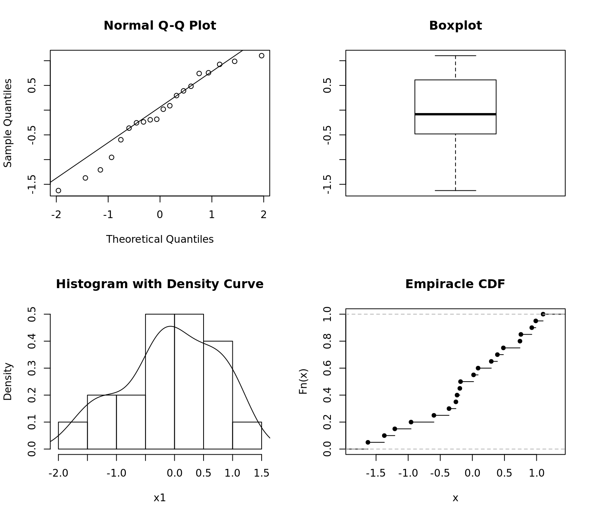
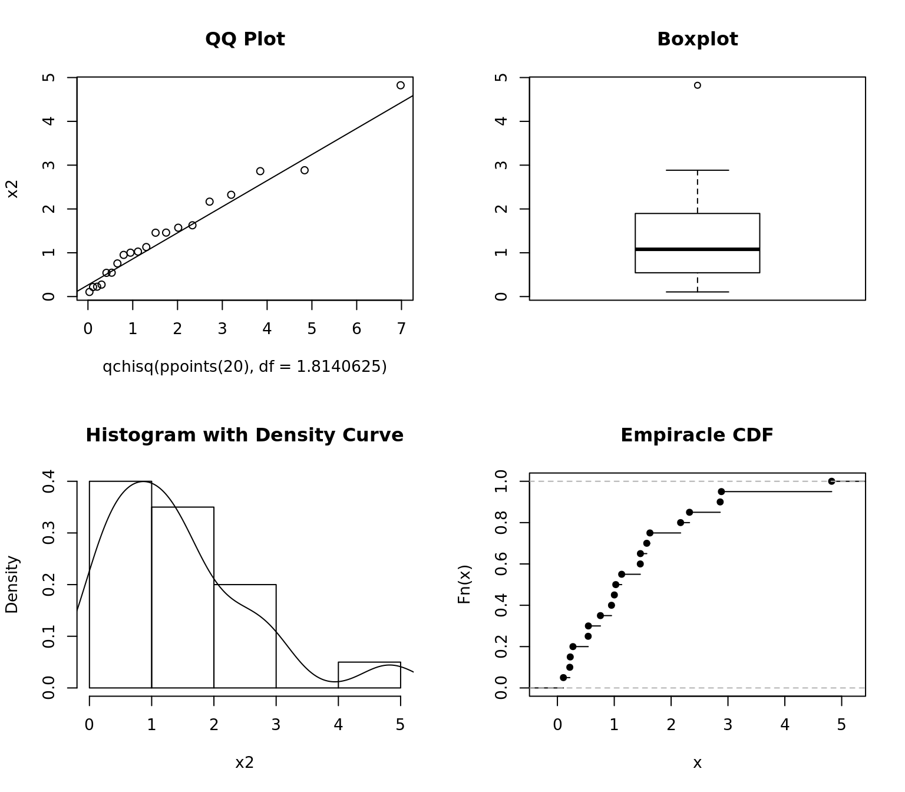
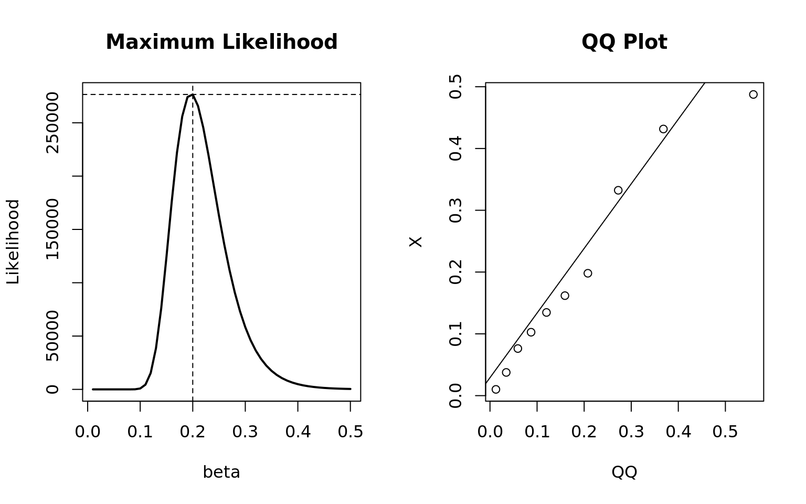
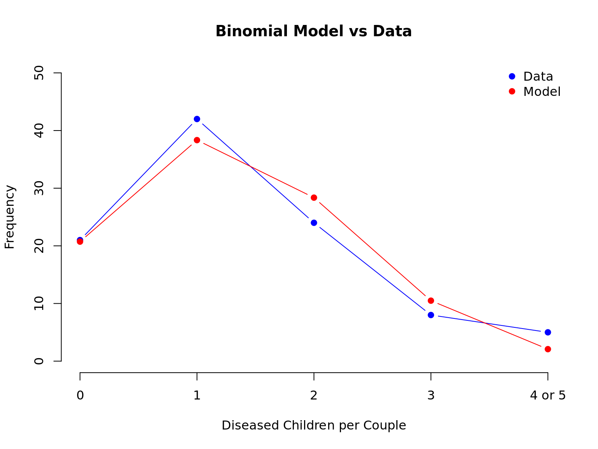

Fitting Distributions
Continuous Distributions
- Assessing Distributions Visually
- Formal Tests for Distribution Fit
- Maximum Likelihood calculation
Normal Distribution
library(nortest)
library(MASS)
## Draw some random data
set.seed(10)
x1 = rnorm(20)
## Distribution plots
par(mfrow = c(2, 2))
qqnorm(x1)
qqline(x1)
boxplot(x1, main = "Boxplot")
hist(x1, freq = FALSE, main = "Histogram with Density Curve")
lines(density(x1))
plot(ecdf(x1), main = "Empiracle CDF")
QQ plot indicates the data might be normal by remaining close to the line. The Box plot, histogram, and density curve all support this assumption.
Formal tests all agree that the data are from the normal distribution. Shapiro Wilk is considered the best for test for testing normality.
## Are the data from a normal distribution?
## Shapiro-Wilk Test
shapiro.test(x1)
Shapiro-Wilk normality test
data: x1
W = 0.95643, p-value = 0.4753## Anderson Darling Test
ad.test(x1)
Anderson-Darling normality test
data: x1
A = 0.27523, p-value = 0.6216 ## Kolmogorov-Smirnoff Test
ks.test(x1, 'pnorm')
One-sample Kolmogorov-Smirnov test
data: x1
D = 0.13528, p-value = 0.8109
alternative hypothesis: two-sidedChi-squared Distribution
## Draw some random data
set.seed(10)
x2 = rchisq(n = 20, 2)
## Estimate the DF parameter by maximum likelihood
fitdistr(x = x2, dchisq, start = list(df = 2)) df
1.8140625
(0.3244201)## Input the estimate from MLE
ks.test(x = x2, y = pchisq, df = 1.8140625)
One-sample Kolmogorov-Smirnov test
data: x2
D = 0.15608, p-value = 0.6584
alternative hypothesis: two-sided## Distribution plots
par(mfrow = c(2, 2))
qqplot(qchisq(ppoints(20), df = 1.8140625), x2, main = "QQ Plot")
qqline(x2, distribution = function(p) qchisq(p, df = 1.8140625))
boxplot(x2, main = "Boxplot")
hist(x2, freq = FALSE, main = "Histogram with Density Curve")
lines(density(x2))
plot(ecdf(x2), main = "Empiracle CDF")
Calculating the MLE manually
## Generate data from the exponential distribution with mean = 1/5
set.seed(1000)
X = rexp(n = 20, rate = 5)
## sample size and range of betas to test
n = 20; beta = seq(.01, .5, by = .01)
## Liklihood function
Likelihood = (1/beta)^n * exp(-1/beta * sum(X))
## Maximum Likelihood
(mle = max(Likelihood))[1] 276565.8(mle.beta = beta[which(Likelihood == mle)])[1] 0.2## Statistical test for how well the specified distribution fits the data
ks.test(x = X, y = "pexp", rate = 1/mle.beta)
One-sample Kolmogorov-Smirnov test
data: X
D = 0.1475, p-value = 0.7232
alternative hypothesis: two-sidedpar(mfrow = c(1, 2))
## Plot the maximum likelihood
plot(x = beta, y = Likelihood, type = "l", main = "Maximum Likelihood", lwd = 2)
abline(h = mle, v = mle.beta, lty = 2)
## QQplot for assessing distribution fit visually
qqplot(qexp(ppoints(10), rate = 1/mle.beta), X, xlab = "QQ", main = "QQ Plot")
qqline(X, distribution = function(p) qexp(p, rate = 1/mle.beta))
Discrete Distributions
- Fitting a Binomial model
- Chi-squared goodness of fit test
- Producing a markdown table
A rare but fatal disease of genetic origin occurring chiefly in infants and children is under investigation. An experiment was conducted on a 100 couples who are both carriers of the disease and have 5 children. A researcher recorded the number of children having the disease for each couple.
library(knitr)
## Dataset
(dta = data.frame(
Diseased = c(0, 1, 2, 3, 4, 5),
Count = c(21, 42, 24, 8, 4, 1)
)) Diseased Count
1 0 21
2 1 42
3 2 24
4 3 8
5 4 4
6 5 1## Number of diseased children (d) and the total number of children (c)
(d = sum(apply(X = dta, MARGIN = 1, FUN = function(p) dta$Diseased * dta$Count)[,1]))[1] 135(c = 5 * sum(dta$Count))[1] 500## MLE
(mle = d / c)[1] 0.27## Calculate the expected probabilities and expected diseased children
dta$Exp.Prob = round(dbinom(x = 0:5, size = 5, prob = mle), 4)
dta$Exp.Diseased = with(dta, sum(Count) * Exp.Prob)
dta Diseased Count Exp.Prob Exp.Diseased
1 0 21 0.2073 20.73
2 1 42 0.3834 38.34
3 2 24 0.2836 28.36
4 3 8 0.1049 10.49
5 4 4 0.0194 1.94
6 5 1 0.0014 0.14## Chi-square test requirements:
## 1) all Exp must be > 1
## 2) at most 20% of Exp may be less than 5
##
## So we need to combine counts 4 and 5 and meet these requirements
dta[5, 2:4] = dta[5, 2:4] + dta[6, 2:4]
dta = dta[-6, ]
dta$Diseased = as.character(dta$Diseased)
dta$Diseased[5] = '4 or 5'
## Compute the Chi-Squared Statistic
dta$X.2 = round(with(dta, (Count - Exp.Diseased)^2 / Exp.Diseased), 4)
dta$Diseased = factor(dta$Diseased)
dta Diseased Count Exp.Prob Exp.Diseased X.2
1 0 21 0.2073 20.73 0.0035
2 1 42 0.3834 38.34 0.3494
3 2 24 0.2836 28.36 0.6703
4 3 8 0.1049 10.49 0.5910
5 4 or 5 5 0.0208 2.08 4.0992## Compute the test statistic pvalue
(TS = sum(dta$X.2)); 1 - pchisq(TS, df = 4)[1] 5.7134[1] 0.2215985## Based on the table below we conclude the binomial model is a good fit for the data
##
## Assessment of Chi-squared GOF P-value
## • p-value > .25 ⇒ Excellent fit
## • .15 ≤ p−value < .25 ⇒ Good fit
## • .05 ≤ p−value < .15 ⇒ Moderately Good fit
## • .01 ≤ p−value < .05 ⇒ Poor fit
## • p-value < .01 ⇒ Unacceptable fit
##
## Plot of the data vs model and create a markdown table from the data frame
plot(x = dta$Diseased, y = NULL, xlab = "Diseased Children per Couple",
ylim = c(0, 50), ylab = "Frequency",
axes = FALSE, type = "n", main = "Binomial Model vs Data")
axis(1, labels = dta$Diseased, at = dta$Diseased)
axis(2, labels = seq(0, 50, 10), at = seq(0, 50, 10))
legend("topright", c("Data", "Model"), col = c("blue", "red"), pch = 19, bty = "n")
points(x = dta$Diseased, y = dta$Count, col = "blue", pch = 19, type = "b")
points(x = dta$Diseased, y = dta$Exp.Diseased, col = "red", pch = 19, type = "b")
kable(dta)| Diseased | Count | Exp.Prob | Exp.Diseased | X.2 |
|---|---|---|---|---|
| 0 | 21 | 0.2073 | 20.73 | 0.0035 |
| 1 | 42 | 0.3834 | 38.34 | 0.3494 |
| 2 | 24 | 0.2836 | 28.36 | 0.6703 |
| 3 | 8 | 0.1049 | 10.49 | 0.5910 |
| 4 or 5 | 5 | 0.0208 | 2.08 | 4.0992 |
## Some Conclusions
## Since N is large we can use asymptotic confidence intervals
## A 95% confidence interval for whether a child will have the disease
mle + c(-1, 1) * 1.96 * sqrt(.27 * (1 - .27))/sqrt(100)[1] 0.1829839 0.3570161## What is the probability that a couple will have at least 1 child with the disease?
1 - pbinom(q = 0, size = 5, prob = .27)[1] 0.7926928